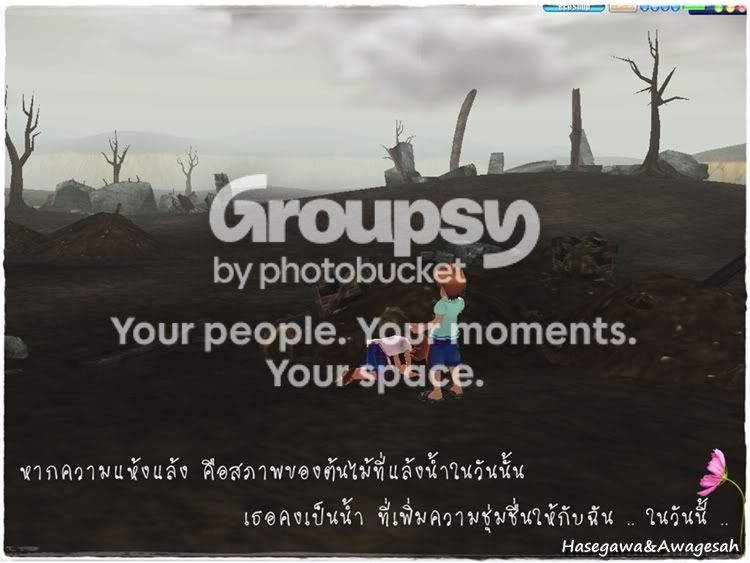

Xzody เขียน:
เลือกที่จะรัก จงอย่าเลือกที่จะแคร์สายตาใคร
เมื่อก่อน ผมเคยคิดว่าสักวันนึงผมคงจะพบเจอกับความรักที่สวยงาม
ทุกๆสิ่งที่ผมคิดในเวลานั้น ผมเริ่มสัมผัสได้ว่ามันคล้ายกับสิ่งที่ผมได้เจอในตอนนี้
ทำไมผมถึงคิดแบบนั้นน่ะหรอ ถามผม ผมก็ไม่รู้เหมือนกัน ว่าทำไม
แต่ผมรู้แค่ว่า ในทุกๆชั่วโมง ทุกๆนาที ทุกๆวินาที ทุกๆลมหายใจเข้าออกของผม ผมมีแต่เธอคนนั้น
เธอคนที่ยิ้มหวานที่สุดในโลก เธอคนที่ทำให้ผมใจเย็นเวลาโกรธ เธอคนที่คอยอยู่ข้างๆเมื่อเกิดปัญหา
เธอคนที่ไม่แคร์สายตาใคร ที่ต้องมาคบกับคนที่ไม่ได้ดีเหมือนคนอื่นๆ
นั่นแหละที่ทำให้ผมมั่นใจว่าเราสองคนจะจูงมือกันก้ามข้ามสิ่งที่เรียกว่า อุปสรรค ไปได้ด้วยกัน
ผมมั่นใจและพูดได้เต็มปากเต็มคำ เลยว่า ผมรักเธอมากกกกกกกกกกกกกก
ไม่มีอะไรในโลกนี้ที่จะมาเปลี่ยนแปลงความรู้สึกของผมที่มีต่อเธอคนนั้นไปได้แน่นอน
"เลือกที่จะรักแล้ว ใครจะมองยังไง ก็เปลี่ยนความรู้สึกนี้ไปไม่ได้"
ความรัก คือ สิ่งที่ผมเชื่อ สิ่งที่ผมคิด และสิ่งที่ผมมอบให้กับคนที่ผมรัก
ปล.1 หากใครได้อ่านข้อความนี้จนจบ แล้วไม่หันไปยิ้มให้คนข้างๆ ขอให้โดนแฮคหมดตัวนะเธอว์
ปล.2 ขอบคุณทุกคนที่อ่านเรื่องราวของผม "อาจไม่ดีเหมือนคนอื่น อาจไม่ลื่นเหมือนใครเขา แต่ว่าเราเขียนมาเล่า ด้วยเรื่องราวจากหัวใจ" ขอบคุณครับ

Takoyaki 2
ollPuMllo เขียน:
พรหมลิขิตนำพาให้เรามาพบกัน
แต่พรหมลิขิต........ไม่ได้ลิขิตให้เรารักกัน
เค้ายังจำวันแรกที่เจอตัวได้นะ ตัวน่ารักมากๆ แต่เค้าก็ไม่รู้ว่าเมื่อไหรที่เค้าเริ่มรักตัว
ตลอดเวลาที่เค้าได้อยู่กับตัวเค้ามีความสุขมาก ตัวจำตอนนั้นได้ไม๊
ตอนที่เค้าทำให้ตัวโกรธสุดๆเป็นครั้งแรกตัวโกรธเค้าไปหลายวัน
จนเค้าไปหาซื้อช๊อคโกเลตให้แล้วเราก็ดีกันเหมือนเดิม เค้านี้แย่เนอะ
3ปีที่ผ่านมาเค้ามีความสุขมาก แต่ก็เคยนั่งนึดูเล่นๆนะว่าเค้าพูดคำว่า"ขอโทษ"
กับตัวไปกี่ครั้งเยอะเนอะขอบคุณนะที่ทนอยู่กับไอคนบ้าๆนี่มาตลอด
ขอบคุณที่ทนกับไอคนขี้บ่นเรื่องมาก เอาแต่ใจ หัวดื้อ ขี้หึงคนนี้มาโดยตลอด
กำแพงที่มันกันระหว่างเค้ากับตัวเค้าคงจะพังมันลงไปไม่ได้จิงๆเค้าคงต้องยอมแพ้แล้วล่ะนะ
ความทรงจำดีๆที่เราผ่านมาด้วยกันเค้าจะเก็บไว้ตลอดไป
ขอให้เพลงนี้กับเธอ..ที่รัก.. http://musicbox.dontreeza.com/music1/611.html
ขอบคุณบ๊องนะสำหรับทุกอย่างที่ผ่านมา
เค้าอยากบ๊องว่า.....เค้ารักบ๊องมากนะ

Takoyaki 3
Dernight เขียน:
ความรัก...ไม่จำกัด
คู่ของเรา อาจไม่เหมือนคู่อื่นๆ...ทั้งทางเพศ และทางวุฒิภาวะ
เธอ...โตกว่าฉัน แล้วยังขาว สวย เป็นผู้ใหญ่ อีกทั้งยังฉลาด รอบคอบ...
ฉัน...แค่ทอมม.ปลายธรรมดา ไร้ความหล่อ เรียนก็ไม่เก่ง หัวช้า แถมยังถูกจำกัดอิสระ...
แต่ไม่ว่าเราจะถูกพ่อแม่กีดกัน หรือฉันจะไม่มีเวลา หรือแม้เธอจะขี้งอนยังไง
เราก้ยัง ช่วยกันฝ่าฟันอุปสรรคเหล่านั้นมา รักกันจนถึงทุกวันนี้
ถึงแม้เธอจะพูดอยู่บ่อยๆ ว่าเราต่างกันเกินไป
แต่ก็เพราะความต่างนี่แหละ...ที่ทำให้เราอยู่ด้วยกันได้
อยากขอบคุณเธอสักครั้ง...และอยากตอบแทนหัวใจที่เธอให้มา
จากคนตัวเล็กๆ ที่บังเอิญเธอถ่อมตัวมาสนใจ
อยากขอบคุณเธอสักครั้ง แม้อาจจะเป็นถ้อยคำที่ดูน้อยไป
ไม่เพียงพอกับใจ ที่ฉันต้องการบอกเธอ...
ขอบคุณจริงๆ ที่เราอยู่ด้วยกันจนถึงทุกวันนี้
ขอบคุณ ที่ช่วยกันสร้างสรรค์วันเวลาที่มีความสุข ไว้ให้หวนนึกถึงยามไกลกัน
ขอบคุณเธอ...ที่ไม่เคยไปไหน
แม้ว่าตัวตนของเรา อาจไม่ได้เกิดมาเพื่อคู่กัน
แต่ใจของเรา ก็อยู่ด้วยกัน ตลอดเวลา
รักเธอเสมอ...สุดที่รัก
^^

Takoyaki 4
CapTainFluk เขียน:
ในโลกกว้างที่มีคนมากมาย
เราอาจเคยเดินสวนทางกันไปไม่รู้กี่ครั้ง
กามเทพมีจริงหรือเปล่านะ อยากรู้จัง
วันหนึ่งเราจึงถูกตั้งให้เป็นคนรัก ที่ห่วงใย
ก่อนหน้านั้นเราเคยพบกันมาก่อนหรือเปล่า
เคยมีช่วงที่เราเป็นคนแปลกหน้า ต่อกันไหม?
ถ้าเป็นอย่างนั้นจริง คงต้องขอบคุณกามเทพ ที่สื่อใจ
ทำให้คนแปลกหน้าอย่างเรา มาห่วงใยและรักกันได้จริงๆ
ฟลุ๊ก รัก เกรซ นะ

Takoyaki 5
HinokiozZ~ เขียน:
✿ My Diary ✿
Sun หมายถึงพระอาทิตย์, Beam หมายถึงแสงอาทิตย์
หากไม่มีพระอาทิตย์ ก็จะไม่มีแสงอาทิตย์
หากไม่มีแสงอาทิตย์ พระอาทิตย์ก็ขาดความอบอุ่น
อย่างนี้พระอาทิตย์จะอยู่ได้อย่างไร
16th June 2009
มันก็เหมือนทุกๆวันที่วอเสร็จก็ต้องมาเกรียนที่ลานสเตเดี่ยม แต่มีพระแปลกหน้าคนหนึ่ง
เข้ามาทักทาย ทั้งๆที่ผมไม่รู้จักเธอเลย สักพักเธอขออีเมล์ผม ผมก็ให้เธอไป
พอรับแอดเสร็จก็คุยๆกัน ก็รู้ว่าเธอคนนี้ชื่อ ‘บีม’ แล้วเราสองก็คุยไปเรื่อย…
24th June 2009
วันนี้ผมล็อคอินเกมเข้ามา ก็มานั่งคุยกับบีม เหมือนๆ 8 วันที่ผ่านมา มันทำให้ผมรู้อะไรเกี่ยวกับบีมมากขึ้น
ขึ้น บีมเป็นพูดตรงๆไม่อ่อนหวาน ไม่มีคะ ขา ออกห้าวๆซะด้วยซ้ำ แต่ก็น่ารักดี 55+
คุยด้วยแล้วคุยยาว เป็นคนเฮฮาปาจิงโกะ ชอบส่งลิ้งค์คลิปฮาๆให้ดู บางทีก็เพลงเพราะๆซึ้งๆ ไม่รู้จะน่ารักไปถึงไหน >//<~…
4th July 2009
วันนี้เป็นวันที่ผมรวบรวมความกล้าหน้าด้านขอบีมเป็นแฟน 55+ เพิ่งรู้จักมา 2 อาทิตย์กว่าๆ
ถึงมันจะน้อยมากๆ แต่มันก็คุ้มค่าที่จะลองเสี่ยง …
19th August 2009
เวลาผ่านเรื่อยมา เราสองคนมีความสุขมาก หวานกันจนมดตอม จนกระทั่งวันนี้เป็นวันที่บีมเข้าริง Az
โดยมีนายsŦAmpz♪ น่ารักน่าเลิฟเป็นคนชักชวนเข้าริง ใจจริงก็อยากให้เข้านานแล้วแหละ จะได้ดูแลง่าย 55+
ยังไงก็ยินดีต้อนรับเข้าริงนะ น้องเบิ้ม …
10th October 2009
วันนี้เป็นวันเกิดผม บีมเซอร์ไพรผม ตอนที่ผมอยู่ลานสเตเดี่ยม บีมชวน พี่อ้อย นวลฉวี และใครอีกไม่รู้สองสามคน
มาตั้งป้ายยืนเรียงกันว่า H B D S U N พร้อมของขวัญเล็กๆน้อยๆจากบีมพี่ๆและเพื่อนๆ สุดท้ายปิดฉากด้วยการเปิดกล่องบอส ตายกันไปยกลาน 55+…
พรหมลิขิตบันดาลชักพา ดลให้มาพบกันทันใด ก่อนนี้อยู่กันแสนไกล พรหมลิขิตดลจิตใจ ฉันจึงได้มาใกล้กับเธอ ♪~
จงเชื่อในพรหมลิขิต จงเชื่อในเหตุการณ์ที่นำพาความรักมาให้!
ขอให้เพื่อนๆชาวอีโค่มีความสุขมากๆกับคนรักในวันแห่งความรักนะครับ ^ ^"

เพลงเพราะๆโดนๆ ตามนั้น = =' http://www.4shared.com/file/33824824/cc ... e.html?s=1

Takoyaki 6
PClimaTack เขียน:นึกว่าจะไม่ได้ลงละ
เก็บของเก่ามาเล่าใหม่^_^
ความรักก็เหมือนภัยธรรมชาติ มักจะเข้ามาจู่โจมโดยไม่ทันตั้งตัวเสมอ ต่างกันตรงเราอยากให้ภัยสงบลง แต่กลับอยากให้ความรักยืนยาว
คนที่มีความรักจึงมีหน้าที่รับรู้และรับมือกับ "ภัยธรรมชาติ" นั้นๆ ให้ได้
ของเราเองก็เช่นกัน เขาเดินมาทักทายเราแบบไม่ทันได้รู้ตัว ทั้งๆ ที่เรานั่งกลุ้มอยู่คนเดียวแท้ๆ
หลังจากคุยกันไปได้ซักพัก ความสัมพันธ์ก็ค่อยๆ ก่อตัวขึ้นอย่างช้าๆ
จากนั้น เขาก็ขอเราเป็น "แฟน"
เราได้แลกอีเมลล์กัน และหลังจากวันนั้น เราก็ได้คุยกัน เรียนรู้ซึ่งกันและกันมากขึ้น ต่อมาก็ได้แลกเบอร์โทรศัพท์กัน (เพราะเขาอยากได้ยินเสียงเราแท้ๆ เลย)
นี่สินะ ต่างคนต่างเติมเต็มซึ่งกันและกัน
เขากำลังเรียนม. 6 และฉันกำลังเรียนต่อมหิดล ก็เลยไม่ได้เจอกันเลย
ถึงกระนั้นก็เถอะ ความสัมพันธ์ของเราสองคนก็ยังคงมีความหมายกับเราเสมอมา
คิดถึงนายนะ "ภัยธรรมชาติ" ของฉัน
ขอให้นายทำความฝันของตัวเองให้สำเร็จนะ
ถึงแม้ว่านายจะเปลี่ยนไป แต่เราจะยังเชื่อมั่นในตัวนายเสมอ

Takoyaki 7
Zetarius เขียน:
ฉันเคยอ้อนวอน ภาวนาให้ถึงฤดูใบไม้ผลิ .. ที่จะคืนวันเวลาที่สดใสให้กับคนอย่างฉัน ..
ต้นไม้ที่ประสบกับภาวะแห้งเหี่ยวอย่างฉัน ได้รู้จัก กับความเขียวขจี ก็ในวันที่ เธอก้าวเข้ามา ..
คน ๆ นึง ที่นั่งอยู่กับรอยน้ำตา .. อยู่ในโลกที่มีแต่สีเทา หมอก และ ควัน ล่องลอย ..
ก็ได้พบกับแสงสว่างเล็กๆ ที่ยื่นมือเข้ามา จับมือฉัน .. และพาเดินออกไปสู่โลกแห่งความเป็นจริง
โลก ที่ไม่ได้มีแค่ฉันกับความเศร้า
โลก ที่ไม่ได้มีแค่ฉันกับคราบน้ำตา
เธอ ได้เข้ามาสอนให้ฉันได้รู้จักโลกใหม่
โลก ที่มีความสุข ความอบอุ่น
โลก ที่มีทั้งความรัก และความอ่อนโยน
ขอบคุณที่สอนให้ฉัน ได้รู้จักกับคำว่า รัก ฉันไม่รู้ ว่าคำว่า รักแท้ คืออะไร ?
คำจำกัดความของคำคำนี้ คืออะไร ?
แต่เมื่อฉันพบกับเธอแล้ว .. ฉันรู้แค่ว่ามันคือความสุข
ความสุขที่หาจากที่ไหนไม่ได้อีก นอกจากเธอคนนี้
ขอบคุณที่สอนให้ฉันรู้จักโต .. สอนให้ใช้ชีวิตที่อยู่ในโลกของความเป็นจริงได้
ถึงแม้ว่าเราจะไม่ได้อยู่ใกล้กัน แต่ระยะทาง ก็ไมได้เป็นอุปสรรค สำหรับเราเลย ..
เธอคนนี้ ในวันนี้ ก็ยังเป็นคนดี ของฉัน ในวันนั้น
Takoyaki 8
Nan_JB เขียน:
2 เดือนก่อนเรายังไม่รู้จักกัน...
14 กุมภา วันวาเลนไทน์ วันแห่งความรัก รักที่มีหลายรูปแบบ ในเมื่อความรักเรามีให้คนอื่นช่างมากมาย แล้วทำไมวันพิเศษวันนี้เราต้องจำกัดกันแค่คู่รัก?
1 เดือนก่อน เราเพิ่งรู้จักกัน...
ความรักความสนิทสนม เขาใช้กฏเกณฑ์อะไรวัดความมากน้อยกันนะ?
ช่วงเวลาเดือนกว่านับจากวันที่แนนเขามาทักพี่ ว่าคิดๆดูแล้วมันช่างน้อยซะจริงสำหรับความเป็นเพื่อนกัน
ทุกครั้งที่ได้เจอ แนนชอบพาพี่ไปเที่ยวในที่ที่ไม่เคยไป(ในECO) พาไปรู้จักคนใหม่ๆ ช่วยเปิดโลกให้คนเพื่อนน้อยอย่างพี่
อา... เมื่อนึกถึงวันเวลาเหล่านั้น แล้วอดยิ้มขึ้นมาไม่ได้จริงๆ
2 สัปดาห์ก่อนเราเริ่มสนิทกัน...
เมื่อมานั่งคิดดูแล้ว.... อะไรชักนำให้เราพบกัน
จะเป็นความบังเอิญที่ไม่มีอยู่จริง หรือสิ่งที่เรียกว่าพรหมลิขิตกันนะ?
ช่่างน่าพิศวงเหลือเกินที่คนแปลกหน้า2คนจะสนิทกันได้เร็วขนาดนี้
ณ ปัจจุบัน...
ขณะนี้กลางคืนวันที่13 กุมภา ใกล้วาเลนไทน์เข้าไปทุกที
ขอให้มนต์วิเศษจงบันดาลความสุขแก่คนทุกผู้
ขอให้หมู่ดาราจงประทานความกล้าแด่คนที่มิอาจเอ่ยเอื้อนคำบอกรัก
ขอให้ละไมแห่งความรักจงอบอวลไปทั่วฟ้า
ขอให้จันทราฝากกระชิบ บอกแนนน้องพี่ว่า
Happy Valentine~

Takoyaki 9
ลึกลับ เขียน:ครบ30เรปซะที
ใจดวงนั้น ที่เธอ ฝากฉันไว้
ยังเก็บอยู่ ข้างใน อกซ้ายนี้
พร้อมคืนให้ หากวันใด เธอคนดี
ไม่ต้องการ ฉันคนนี้ อีกต่อไป
ไม่โกรธ... หากเธอ จะขอคืน
จะไม่รั้ง จะไม่ฝืน เธอเอาไว้
เพียงเธอบอก มาคำเดียว ว่าจะไป
ฉันพร้อม จะตัดใจ... คืนให้เธอ

Takoyaki 10
suangjaa เขียน:
เรื่องเกิดขึ้นที่ Nozarin capeค่ะ ตอนนั้นฉันเล่นตัวละครชื่อ มิหมีมีสัตว์เลี้ยงคู่ใจเป็นหมาป่า ชื่อมะหมา ฉันเพิ่งเวล 23 เองและเล่นเกมส์ไม่เป็นด้วยค่ะ^^
ฉันกำลังนั่งอยู่กับความโมโหที่ไปละลายเปอร์มา แต่แล้วก็พบกลับเทพบุตร(เงาปีศาจ) ชวนตี้ค่ะ
เชื่อไหมค่ะว่าเราอยู่ริงเดียวกันค่ะแต่ไม่เคยคุยกันเลย(ฉันก็เอะใจอยู่แล้วค่ะว่าทำไม ตัวหนังสือมันมีสีเขียว ๆ สีฟ้า ๆ)
ด้วยสาเหตุนี้เองที่เค้าชวนฉันตี้ค่ะ เราก็ไปเก็บเวลด้วยกัน เรียนรู้นิสัยกันและกัน เค้าเป็นคนที่เจ้าชู้ค่ะ
เพราะเห็นสาว ๆ มารุมล้อมเค้าเต็มไปหมดเลย ขี้เล่น กวน ขี้เป็นห่วง เจ้าเหล่ งก ขี้หึง เป็นคนช่างจำค่ะ
ถ้าเราทำไรไม่ดีไว้เค้าจะจำ ๆๆๆ อีกอย่าเค้าสามารถคิดชื่อฉายยาให้ฉันได้ตลอดค่ะ เช่น ป่องปอง(แก้มฉันบวมค่ะ เดียวจะเก็บตังศัลยกรรมล่ะ)
เหม่ง ขาโต๊ะสนุก บ๊อง ติงต๊อง จู๊ดๆจัง เป็นต้น ดูแต่ละชื่อสิค่ะ ไม่มีอันไหนดีเลยค่ะ T^T
แต่จริง ๆ เค้าเป็นคนที่น่ารักมากน่ะค่ะ ตอนที่ฉันไปเป็นนักเรียนแลกเปลี่ยนเค้าก็รอฉันตั้ง 1 ปีแถมส่งข้อความหาด้วยค่ะ
เอาใจใส่ คอยเป็นห่วงดูแลและบ่นค่ะ พอฉันกลับมาเค้าก็ไม่เคยเปลี่ยนน่ารักยังไงก็ยังขี้บ่นอย่างนั้นค่ะ
ความจริงที่บอกว่าเค้าเจ้าชู้ขอคืนคำค่ะ เพราะ 3 ปีแล้วที่เราคบกันมา
เค้าไม่เคยทำให้ฉันเสียใจเลยค่ะ เค้าเป็นคนใจดี(แต่ขี้งกค่ะ)ขี้เล่น สาวๆจึงมารุมล้อม
เค้าอยากบอกพี่หมีว่า “ไม่ว่ายังไง เค้าเชื่อใจตะเองเสมอน่ะค่ะ^^ อาจจะมีแหย่เล่นบ้างอย่าโกดเค้าน่ะ ถึงตะเองจะขี้บ่นแค่ไหน แต่เค้าก็รักตะเองน่ะค่ะ” พี่หมีกินผึ้ง..
ไม่ต้องมีคำบรรยายใด ๆ สักคำให้ลึกซึ้ง
ไม่ต้องบรรยายอะไรให้สวยเลิศเรอ
ไม่ว่าอะไรมันคือเหตุผลที่ฉันนั้นรักเธอ ให้รู้ว่า
“รักเธอ” เท่านั้นพอ
ครับ ที่รักของผมเธอเป็นคนเหมือนจะเรียบร้อย แต่จริง ๆ แล้วโหดครับโดยเฉพาะกับผม เธอขี้หึงมากกกกก กินจุ กินจนแก้มของเธอบวมครับ ผมเป็นห่วงกลัวเธอจะอ้วนเธอก็ไม่ฟัง แถมว่าผมว่าขี้บ่น เป็นเด็กที่ดื่อที่สุด ขาใหญ่กว่าโต๊ะสนุกอีกครับ แต่ถึงยังไงก็รักน่ะ… ยัยป่อง
SuAnGjaa


 )
)